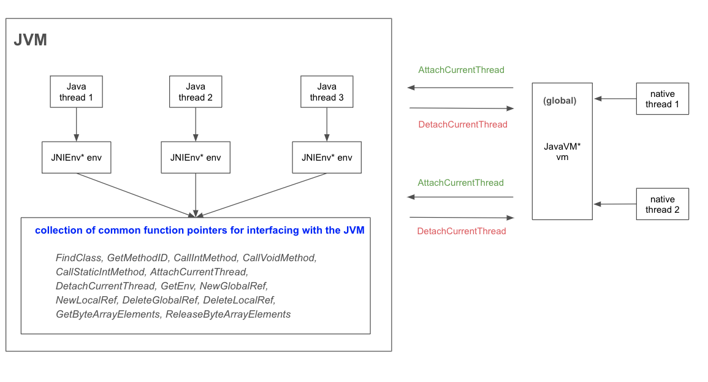

Posted Joe Chu misc12 minutes read (About 1804 words)0 visits
JNI In Multi-threading
Use JNI in the context of multi-threading.
1. Introduction
Using JNI (Java Native Interface) in a multithreaded environment requires careful handling to ensure thread safety, proper lifecycle management of the JVM, and the native resources. JNI can be used in the context of Java multithreading, native multithreading or both. In each case, we need to carefully handle some key factors such as thread safety, JNI attchment and error handling.
Here is a high-level diagram illustrating the operation of JVM multithreading, highlighting the interaction between Java threads and native threads.

Key Differences Between JNIEnv* and JavaVM*:
JNIEnv* is thread-local and provides thread-specific access to JNI functions.
JavaVM* is global to the JVM and allows operations across threads, such as attaching/detaching threads.
2. Java Multithreading
When using JNI in the context of Java multithreading, here are some key considerations.
JNIEnv* env per thread
process(JNIEnv* env, jobject thiz)
Each Java thread calling into native code automatically gets its own JNIEnv*. You don’t need to attach the thread to the JVM manually.
This pointer is thread-local and should not be shared between threads.
Avoid storing JNIEnv* in global variables or static storage.
Thread-Safety
Ensure the native code is thread-safe, especially if multiple Java threads interact with shared native resources.
Use synchronization mechanisms like std::mutex to protect shared data.
Global References
Use NewGlobalRef to create references for objects that need to be accessed by multiple threads or persist across JNI calls.
Always delete global references with DeleteGlobalRef when they are no longer needed.
Local References
JNI local references are valid only in the thread and scope where they are created. They must not be used across threads.
// Mutex for thread synchronization std::mutex g_mutex;
// Global references jclass g_activity_class = nullptr; // Global reference to the Activity class jmethodID g_progress_method = nullptr; // Method ID (not a global reference)
// Find the Activity class jclass localClass = env->FindClass("com/example/jnimultithreading/JNIActivity"); if (localClass == nullptr) { return JNI_ERR; }
// Create global reference to the class g_activity_class = (jclass)env->NewGlobalRef(localClass); env->DeleteLocalRef(localClass); // Delete the local reference
// Cache the method ID g_progress_method = env->GetMethodID(g_activity_class, "onProgressUpdate", "(II)V");
return JNI_VERSION_1_6; }
JNIEXPORT void JNICALL Java_com_example_jnimultithreading_JNIActivity_nativeProcessData(JNIEnv *env, jobject thiz, jint thread_id){ // Simulate work with progress updates for (int i = 0; i <= 100; i += 20) { { std::lock_guard<std::mutex> lock(g_mutex); LOGI("Thread %d progress: %d%%", thread_id, i); env->CallVoidMethod(thiz, g_progress_method, thread_id, i); } usleep(500000); // Sleep for 500ms } }
JNIEXPORT void JNICALL Java_com_example_jnimultithreading_JNIActivity_nativeCleanup(JNIEnv *env, jobject thiz){ if (g_activity_class != nullptr) { env->DeleteGlobalRef(g_activity_class); g_activity_class = nullptr; } g_progress_method = nullptr; // Just set to null, no need to delete LOGI("Native resources cleaned up"); }
// Clean up global references if (g_activity_class != nullptr) { env->DeleteGlobalRef(g_activity_class); g_activity_class = nullptr; } } }
3. Native Multithreading
If multithreading happens in native code (rather than in Java), there are notable differences in how threads are managed, synchronized, and interact with the Java Virtual Machine (JVM). The most significant difference is:
Thread Lifecycle - Created and managed outside of the JVM, typically using threading APIs like std::thread (C++), POSIX threads, or platform-specific APIs. - Do not have an automatic relationship with the JVM; they must explicitly attach to the JVM using AttachCurrentThread if they need to interact with Java objects. - After their work is done, they must detach using DetachCurrentThread to avoid memory leaks.
JavaVM* To attach/detach a native thread from JVM, we need the JavaVM* pointer. The JavaVM* pointer in the JNI represents the JVM instance running the Java code. Unlike the JNIEnv*, which is thread-local and specific to a single thread, the JavaVM* is global and shared across all threads in the JVM. It provides a way for native code to interact with the JVM at a higher level, enabling operations that span multiple threads.
As we mentioned in the diagram in section 1, for threads created in native code:
The JavaVM* is commonly used for attaching and detaching native threads to/from the JVM, ensuring they can use JNI functions.
Native threads must attach themselves to the JVM using the JavaVM* before accessing JNI.
Demo To illustrate how JNI operates in the presence of native threads, we will create a more complex example.
privatefinalThreadProgressCallbackcallback= value -> { ThreadcurrentThread= Thread.currentThread(); longnativeThreadId= nativeWorker.getNativeThreadId(); Log.i("MainActivity", "JC, Callback running on thread: " + nativeThreadId);
// Process on native thread logBuilder.append("Java received: ").append(value).append("\n"); intresult= nativeWorker.processValue(value); logBuilder.append("Native processed and returned: ").append(result).append("\n");
// Test the thread-registered method intthreadResult= nativeWorker.threadRegisteredMethod(value); logBuilder.append("Thread-registered method returned: ").append(threadResult).append("\n");
// Only use UI thread for updating TextView finalStringoutput= logBuilder.toString(); mainHandler.post(() -> outputText.setText(output)); };
// Global reference to Java VM and callback static JavaVM* g_vm = nullptr; static jobject g_callback_object = nullptr; static jmethodID g_callback_method = nullptr; static jclass g_native_worker_class = nullptr;
// New method that will be registered from the native thread jint threadRegisteredMethod(JNIEnv* env, jobject thiz, jint value){ LOGI("JC, threadRegisteredMethod called on thread: %ld", std::this_thread::get_id()); return value * 3; }
// Worker thread function that will call back to Java voidnativeThread(int initialValue){ JNIEnv* env; bool needsDetach = false;
// Attach thread to JVM if needed int getEnvResult = g_vm->GetEnv((void**)&env, JNI_VERSION_1_6); if (getEnvResult == JNI_EDETACHED) { if (g_vm->AttachCurrentThread(&env, nullptr) == JNI_OK) { needsDetach = true; } else { LOGI("Failed to attach thread to JVM"); return; } }
LOGI("JC, Native thread started with ID: %ld", std::this_thread::get_id());
// Register the new native method using the cached class reference if (g_native_worker_class != nullptr) { JNINativeMethod threadMethod[] = { {"threadRegisteredMethod", "(I)I", reinterpret_cast<void*>(threadRegisteredMethod)} }; if (env->RegisterNatives(g_native_worker_class, threadMethod, 1) < 0) { LOGI("Failed to register thread method"); } else { LOGI("Successfully registered thread method"); } }
// Simulate some work std::this_thread::sleep_for(std::chrono::milliseconds(1000));
// Call back to Java with the value env->CallVoidMethod(g_callback_object, g_callback_method, initialValue);
// Detach thread if we attached it if (needsDetach) { g_vm->DetachCurrentThread(); } }
voidstartAsyncWork(JNIEnv* env, jobject thiz){ // Get the callback field from NativeWorker jfieldID callbackField = env->GetFieldID(env->GetObjectClass(thiz), "callback", "Lcom/example/jnimultinativethread/ThreadProgressCallback;");
// Get callback object and method jobject localCallback = env->GetObjectField(thiz, callbackField); jclass callbackClass = env->GetObjectClass(localCallback);
// Create global reference to callback object if (g_callback_object != nullptr) { env->DeleteGlobalRef(g_callback_object); } g_callback_object = env->NewGlobalRef(localCallback);
// Get callback method ID g_callback_method = env->GetMethodID(callbackClass, "onNativeCallback", "(I)V");
// Start native thread with initial value std::thread worker(nativeThread, 42); worker.detach(); }
jint processValue(JNIEnv* env, jobject thiz, jint value){ LOGI("JC, processValue called on thread: %ld", std::this_thread::get_id()); return value * 2; }
// Clean up global references if (g_callback_object != nullptr) { env->DeleteGlobalRef(g_callback_object); g_callback_object = nullptr; } if (g_native_worker_class != nullptr) { env->DeleteGlobalRef(g_native_worker_class); g_native_worker_class = nullptr; } }
It is worth noting that Thread.getId() in Java and std::this_thread::get_id() in C++ use different numbering systems for thread IDs. To make them match and be more comparable, we return pthread_self() from the native code and let Java obtained the native thread id.
The log information confirms the accuracy of our illustration above.
1 2 3 4
JC, Native thread started with ID: 493381438640 JC, Callback running on thread: 493381438640 JC, processValue called on thread: 493381438640 JC, threadRegisteredMethod called on thread: 493381438640